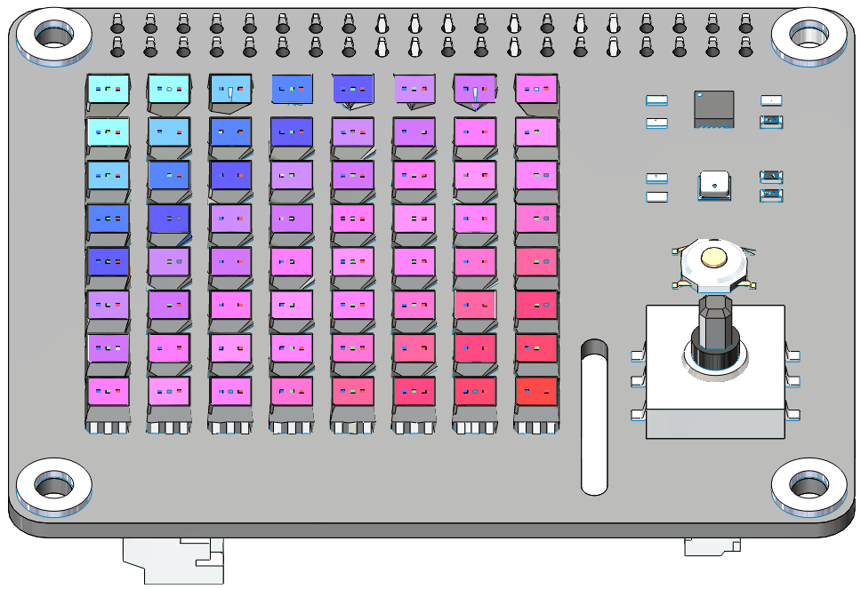

About X Sense HAT¶
{kind=link}
The X Sense HAT is an add-on board for Raspberry Pi. It includes an 8×8 RGB LED matrix, a joystick，a BME280 sensor and a MPU9250 sensor. At the same time it also equipped with a speaker and a vibration motor, you can use them to make your X Sense HAT more interesting.
It contains the following functions：
Draw a pixmap and gif
Detect Temperature
Detect Humidity
Detect Pressure
Detect Acceleration
Detect Angular velocity
Detect Geomagnetic Direction
Detect Attitude Angle
TTS
Play Sound Effects
Play Backgrounds
Feel the Vibration

RST Button:
Short pressing RST Button causes program resetting.
Long press RST Button, you will disconnect the Bluetooth.
Bluetooth Indicator:
The Bluetooth indicator keeps turning on at a well Bluetooth connection, blink at a Bluetooth disconnection, blink fast at a signal transmission.
MPU9250
MPU-9250 is a 9-axis MotionTracking device that combines a 3-axis gyroscope, 3-axis accelerometer, 3-axis magnetometer and a Digital Motion Processor™ (DMP) all in a small 3x3x1mm package available as a pin-compatible upgrade from the MPU6515. If you want to know more about it, please check the MPU9250 Datasheet.
BME280
BME280 is an environmental sensor that integrates temperature, humidity, air pressure and trinity. With high-level, multi-function, small size, etc. If you want to know more about it, please check the BME280 Datasheet.